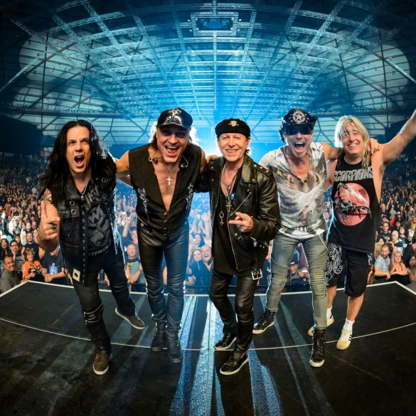
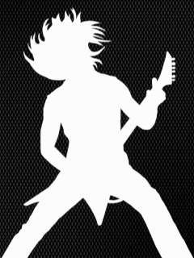
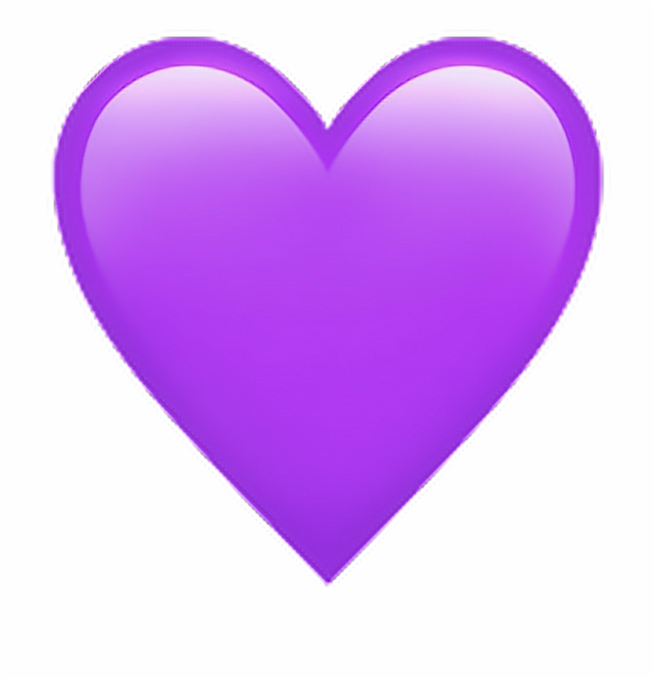

|

Scorpions - немецкая рок-группа
Scorpions (рус. Скорпионз[12], Скорпионы) — немецкая англоязычная рок-группа,
созданная в 1965 в Ганновере[13]. Для стиля группы характерны как классический хард-рок,
так и лирические гитарные баллады.
Scorpions являются самой популярной рок-группой Германии и одной из самых известных в мире,
продав более 100 миллионов копий своих альбомов (по состоянию на 29 января 2010)[14].
Коллектив занимает 46 место в списке «Величайших артистов хард-рока» по версии VH1[15].
С 2015 года группа гастролировала с юбилейным туром 50th Anniversary — World Tour 2015/2016.
В 2017 выступают с туром Crazy World Tour.
|

Меню

Факты
Фото
|